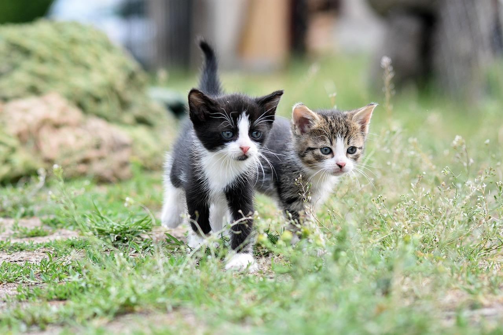
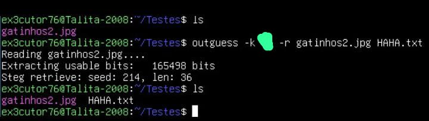
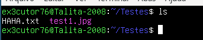
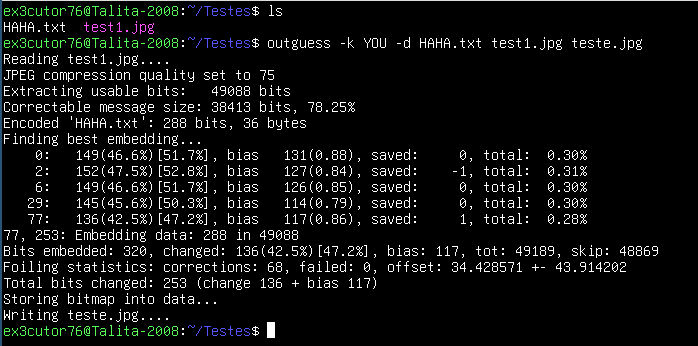
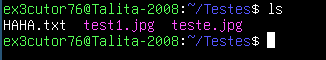

Esteganografia: Isso não é só uma imagem...

Percebe essa imagem de gatinhos? Pois é... Isso na verdade tem um arquivo, não acredita em mim? Então vamos
descriptografar juntos e sim isso daqui não é só um ensinamento, mas uma lição juntos =)
Se quiser instalar a ferramenta para descriptografar use esse comando: sudo apt install outguess
Como encontrar um arquivo em uma imagem?
Tudo que precisamos é de um outguess que é uma ferramenta que te ajudará a armazenar arquivos dentro de imagens
assim escondendo a imagem.
Agora para começar a descriptografar:
Seguinte isso aqui vai ser um pequeno desafio a você o visitante que está lendo, se caso você conseguir acompanhar, parabéns
você passou do teste, se não, recomendo que leia com atenção.

No caso tenho aqui a imagem e então descriptografei o que tem dentro e bem sim o nome do arquivo que está dentro da imagem se chama
HAHA.txt e bem... A senha não vou dizer, mas vou te dar uma dica, além disso eu fiz isso usando o comando: outguess -k SENHA -r (imagem).jpg (nome-do-arquivo).txt
Dicas:
Existe um ditado que diz: O gato tem...
Pera mas são dois gatos... Então... 2 * ditado = ???
Se caso você conseguiu leia use o comando "cat" no HAHA.txt e você verá uma surpresa.
contexto dos comandos:
outguess --> Chama a ferramenta
-k --> Senha
-r --> Modo de recuperação
(Imagem).jpg --> Imagem onde o arquivo está
(nome-do-arquivo).txt --> Arquivo dentro da imagem
Como que guarda um arquivo dentro de uma imagem?:
Eu fiz isso usando a ferramenta outguess que inclusive é uma ferramenta até que fácil de usar e sim você se acostuma rápido até:
Primeiro de tudo iremos precisar de uma imagem .jpg (Que é recomendável) e um arquivo (Pode ser qualquer arquivo, não precisa ser necessariamente .txt).

Que no meu caso vou utilizar os que e tenho aqui.

Certo por aqui eu usei esse comando que bem como podem ver eu coloquei a senha como "YOU" e bem a estrutura do comando é assim: outguess -k SENHA -d arquivo.txt imagem.jpg imagem2.jpg
Contexto dos comandos:
outguess --> Chama a ferramenta
-k --> Coloca uma senha
-d --> Arquivo
imagem.jpg --> Imagem original
imagem2.jpg --> Nome da imagem que terá o arquivo dentro
Resultado:

Percebe esse teste.jpg? Pois é, ele é a imagem com o arquivo dentro.